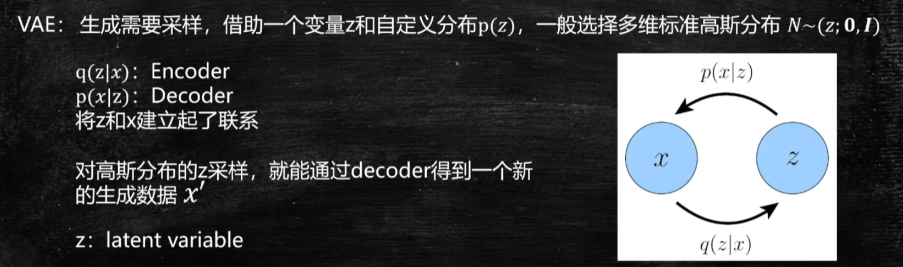
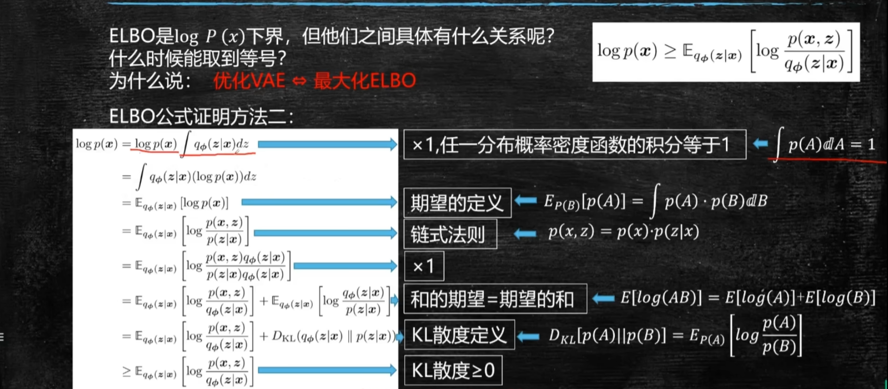
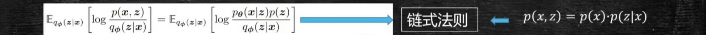
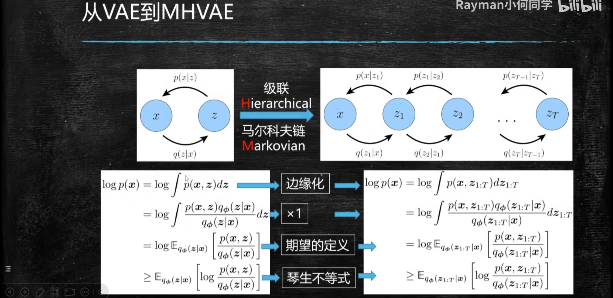

Diffusion理论公式¶
ref：【公式推导】还在头疼Diffusion模型公式吗？Diffusion理论公式喂饭式超详细逐步推导来了！
《Understanding Diffusion Models: A Unified Perspective》：https://arxiv.org/abs/2208.11970
《Denoising Diffusion Probabilistic Models》:https://arxiv.org/abs/2006.11239


1 VAE¶
1.1 极大似然模型¶

目的是使得模型学得数据集的分布
给定数据集 \(x_D\)，通过模型学得 \(\phi\)参数，得到模型 \(p_{\phi}(x_D)\)，训练模型最大化 \(p_{\phi}(x_D)\)，使得 \(p_{\phi}(x_D)\) 能够拟合样本 \(x'\)
得到模型 \(p_{\phi}(x_D)\) 以后，还能够进行采样，采样出来的样本可能不在数据集里面，但是采样出来的样本是符合概率分布的值
1.2 VAE¶
- 重点在于理解：VAE就是建立 真实图片 \(x\) 与 隐变量高斯分布\(z\) 之间的转换，工具是 Encoder和decoder

首先，生成模型必须要有能够采样的能力，而不能只能固定生成一些样本
所以，首先要有一个分布供我采样，有了分布才能采样，VAE就借助了一个非常简单的分布，就是标准高斯分布，用公式表达：以0为均值，\(I\) 为方差的一个分布，注意是多维的 \(N \sim N(z;\mathrm{0},\mathrm{I})\)
VAE的结构首先分为两个部分：Encoder+decoder
文字表达：
**Encoder： **把一些图像通过Encoder变成一些embedding，一般是维度比较低的embedding
**decoder： **decoder被维度比较低的embedding生成一些维度比较高的图片
数学表达：
Encoder：\(q(z|x)\) 给定图片 \(x\) 能够拿到 \(z\)，\(z\)表示标准高斯分布的一个样本
Decoder：\(p(x|z)\) 给定标准高斯分布的一个值，通过decoder生成一张图片\(x\)
VAE的Encoder和decoder就是在 \(x\)和\(z\)之间建立起联系
为什么这么做的原因：
因为让模型直接学习 \(x\)的分布比较难，\(x\)可能并不是常见的分布，所以没有办法采样，但如果把\(x\)与一个标准高斯分布联系起来，那么每在标准高斯分布上采样一个值，接着通过decoder就能映射成在\(x\)也就是pixel这个像素空间上，生成一张图片，这样就会有很多样本产生，因为标准高斯分布可以采样出无穷无尽个样本
也就是这句话：
z 表示隐变量，一般采用高斯分布，且一般是多维的，理论上讲可以是任意一个能够进行方便采样的分布，只是因为高斯部分比较简洁，推导也比较简单，所以一般采用高斯分布作为隐变量。
一句话，VAE就是建立 真实图片 \(x\) 与 隐变量高斯分布\(z\) 之间的转换
1.3 VAE的数学原理¶

首先，VAE的优化目标，学习到的分布 \(p_{\phi}(x)\) 趋近于 真实分布 \(p(x)\)
首先明确优化目标： \(p_{\phi}(x) \rightarrow p(x)\)
那具体怎么实现目标呢？思想就类似于辅助线 & 中间变量，这里借助的中间变量就是 \(z\)
首先，真实分布 \(p(x)\) 一般用对数估计，表示成 \(logp(x)\) ，且有下界 \(\mathbb{E}_{q_{\phi}(z|x)}[log \frac{p(x,z)}{q_{\phi}(z|x)}]\)
以上步骤都很简单，没啥好说的，值得注意的是琴生不等式，也就是把log内移
理解琴生不等式：

文字描述：任意两点的期望 ＞ 期望的函数值
图示：任意两点的连线，永远在曲线上方
函数值的期望 ＞ 期望的函数值（对于凸函数来说：期望>函数值）
而log函数是个凹函数，反过来的，也就是 弦 在 曲线的 下方（也就是 函数值 > 期望）借助脑袋中的图像理解
不用死记硬背，去想图像，画个图即可，也就是看明白了公式，这个公式证明出来有什么用？
1.4 为什么说 优化VAE《==》最大化ELBO？¶


\(ELBO= \mathbb{E}_{q_{\phi}(z|x)}[log \frac{p(x,z)}{q_{\phi}(z|x)}]\)
再解释一下：给定数据集 \(x\)，那么\(p(x)\)确定，也就是\(logp(x)\)确定
Encoder的优化目标 \(q_{\phi}(z|x)=p(z|x)\) 《====》 KL散度=0
那和又是固定的，所以拟合未知但是确定的p(x)，变成了最大化 ELBO
VAE的目的就是学到真实\(x\)的分布\(p(x)\)，但是又不好直接学到，所以借助辅助变量z，通过Encoder和decoder间接学到\(x\)的分布，又推出了下界，下界就是\(ELBO\)，但是\(logP(x)=ELBO+KL散度\)，\(KL散度\)是Encoder的目标，等于\(0\)最好就是 \(q(z|x)\)无限接近\(p(z|x)\)
1.5 拆解ELBO¶

使用链式法则的原因是因为，我们用的是中间变量\(z\)

将 ELBO拆成了 ELBO=重建项-先验匹配项
\(=\mathbb{E}_{q_{\phi}}(z|x)[logp_{\theta}(x|z)]-D_{KL}(q_{\phi}(z|x)||p(z))\)
- 首先，为什么叫重建项？
\(p(x|z)\) 也就是已知\(z\)学习\(x\)，就是\(decoder\)
decoder的目的就是重建图像\(x\)，所以叫重建项
- 为什么叫先验匹配项？ \(D_{KL}(q_{\phi}(z|x)||p(z))\)
\(q_{\phi}(z|x)\) \(x\)到\(z\)的分布，就是\(Encoder\)
也就是让Encoder学到的分布接近于\(z\)，\(z\) 是什么？\(z\)就是我们采样的高斯分布，也就是\(p(z)\)
我们要让 我们的Encoder编码，把\(x\)映射到\(z\)空间上，\(z\)能满足指定的分布，也就是prior matching
\(z\)就是prior，也就是Encoder以后的\(z\)，\(z\)满足我们自己选的高斯分布，也就是把 我们的 \(x\)映射到\(z\)，\(z\)满足我们自己选的高斯分布，真是因为我们编码后的\(z\)满足高斯分布，后续我们才可以抛开Encoder，后续直接在decoder上进行采样得到高斯分布值，然后通过decoder得到\(x\)
一句非常重要的话：
Encoder把x映射成z，并且这个z无限接近高斯分布
所以后需才可以直接丢掉Encoder，直接采样x映射的高斯分布z，直接采样，然后重建x
也就是保证VAE能做生成任务的前提：把真实分布映射到 高斯分布上
- 优化VAE，就是优化ELBO，ELBO有两项：重建项+KL散度项
所以，最大化ELBO，就是最大化重建项，也就是最小化先验匹配项
接下来解释，最大化重建项是什么意思？最小化先验匹配项又是什么意思？
- 最大化重建项怎么理解： \(\mathbb{E}_{q_{\phi}}(z|x)[logp_{\theta}(x|z)]\)
最大化重建项也是模型decoder出来的\(x\)，和真实的\(x\) 越相近越好，也就是重建误差越小越好，也就是重建出来的概率越大越好，也就是 \(p_{\theta}(x|z) \rightarrow 1\) ，也就是 \(logp_{\theta}(x|z) \rightarrow 0\)
- 最小化 先验匹配项 \(D_{KL}(q_{\phi}(z|x)||p(z))\)
\(q_{\phi}(z|x)\) 通过Encoder映射到隐空间之后，尽量满足分布，越接近越好，也就是最小化KL散度→0
这项KL散度，相当于训练Encoder的loss，这项loss降到最小，也就是Encoder学到最好
如果这一项＝0，也就是完全把真实世界的\(x\)映射到了标准的正态分布，此时Encoder是学习的非常完美的
也就是KL=0
- ADD：如果把后面项去掉，就是只留下 重建项，就变成的AE（AutoEncoder）模型，AutoEncoder没有生成能力，因为没有把原始数据映射到高斯分布上，也就是在生成的时候，没有办法进行采样，也就是没有办法通过decoder得到图像，（没有了采样，就没有了生成）
AE模型没有了采样能力，decoder出来的东西也就不是多样的，不是一个全新的，此时\(z\)的分布，就是AutoEncoder的z分布是未知的，因为我们没有把\(x\)强制的归于某个分布，也就是\(z\)是未知的，此时是没有办法进行有效采样的，也就没有办法生成更多的图片
1.6 VAE的结构¶

- 描述图片

首先有一张训练集图片x，通过Encoder，Encoder就是会把训练的x映射到z上面，z所在的是一个隐空间，隐空间怎么表达呢？因为我们就是要把x映射到正态分布空间上，正态分布是通过均值和方差描述的，也就是会得到一个均值向量 \(\mu_{\phi}(x)\) 和一个方差向量 \(\sigma^2_{\phi}(x)\) ，因为我们使用的是标准高斯分布，所以我们优化的目标就是 \(\mu_{\phi}(x) → 0\) 和 \(\sigma^2_{\phi}(x) → \mathrm{1}\) 全0向量 和 全1向量

上面描述的过程 也就是 公式中的 先验匹配项，也就是第二项
接下来：
我们得到了尽可能得全0向量 \(\mu_{\phi}(x)\) 、全1向量 \(\sigma^2_{\phi}(x)\) ，
\(z'\)是根据Encoder得到的 \(\mu\) 和\(\sigma\) 重参数化得到的 \(z'\)
正式采样的时候，不需要Encoder，而是直接从 "标准"正态分布\(z'\)采样出来的，然后通过decoder得到一张新的图片
注意：
Encoder出来的\(z\)，就是\(z'\)是希望尽可能为标准正态分布的
1.7 参数重整化¶

- 为什么？重参数化技巧
如果不进行参数重整化的话，\(z'\)是根据均值和方差采样出来的，但是我们的均值 \(\mu_{\phi}(x)\) 和方差 \(\sigma^2_{\phi}(x)\) 里面都是包含参数的《====》也就是我们采样的随机噪声里面是包含参数的《=====》 随机过程中包含了待优化的参数 \(\phi\) 此时，对参数的 \(\phi\) 是不可导的《=====》 因为这是一个随机过程，随机过程中包含参数，怎么求这个参数的导数呢？《=====》鉴于此，引入了重参数化技巧。让这个过程变得可导
- 什么是？重参数化技巧
首先，重参数化技巧是在一个标准正态分布里面，先随机取一个值，也就是 \(\epsilon \sim N(\epsilon;0,I)\)
也就是采样出来的 单位噪声 × 方差 + 均值 等价于 从 \(\mu_{\phi}(x)\) 和 \(\sigma^2_{\phi}(x)\) 中直接采样
也就是说这样采样出来的参数，均值也等于 \(\mu_{\phi}(x)\) ，方差也等于 \(\sigma^2_{\phi}(x)\)
-
单位噪声 × 方差 + 均值等价于 从 \(\mu_{\phi}(x)\) 和 \(\sigma^2_{\phi}(x)\) 中直接采样 ||好处是是什么？
首先，我们的随机过程是在一个没有参数的噪声中采样的，也就是说这个随机过程是不包含参数的，那后面对参数 \(\phi\) 优化的时候，就可以直接求导了，因为这个参数是 剥离出这个随机过程的，以上就是重参数化的过程；
总之重参数化过程 保证了 采样的分布没有变，然后又让所有参数是可导的，而没有在一个随机的过程中，这样模型才能训练，也就是重参数化技巧的好处
1.8 VAE模型小结¶

首先是 模型的整体架构，并包含了 重参数化技巧
第二点，优化VAE 等价于 优化 ELBO，更具体来说就是 最大化 ELBO
第三点，继续拆解ELBO，ELBO包含两部分（1）重建项（2）先验匹配项
（1）重建项：反映的是decoder从隐变量重建图片的能力
（2）先验匹配项：反映的是Encoder将图片映射到指定隐变量分布的能力，也就是把图片映射到标准正态分布的能力
第四点，重参数化技巧的好处
第五点，生成的时候就不需要Encoder了，每次只需要在Encoder出来的变量采样一个z，这样就可以通过decoder生成一张新的图片了，以上是一个VAE的过程
2 MHVAE的推导¶

中文：马尔科夫链的级联的VAE（级联马尔科夫链VAE）

- 实际上就是把很多VAE堆叠起来，而且每一个状态值依赖前一个和它相邻的前一个状态，而与之前的更长更远的状态是无关的，也就是马尔科夫链
- 公式推导的变化：
（1）公式推导的原理是一模一样的
（2）区别在于，之前单个VAE只需要一个辅助变量\(z\)，现在级联马尔科夫VAE，有多个辅助变量\(z\)，所以从\(z→z_{1:T}\)
3 VDM理论推导¶

中文翻译：Variational Diffusion Models 变分扩散模型
区分：（ Denoising Diffusion Probabilistic Models，DDPM）去噪概率扩散模型

从 级联马尔科夫VAE \(MHVAE\) → \(VDM\)
MHVAE+3个限制条件 就会变成 VDM
限制1：数据\(x\)和所有的隐变量\(z_t\)维度相同
之前的VAE，\(x\)和\(z\)的维度可以是不同，且一般也是不同的
但如果是 \(VDM\)的话，映射的维度就是相同的，也就是\(x\)和所有的隐变量\(z\)的维度都是相同的
限制2：所以Encoder的过程是不需要学习的
也就是从 \(z_1 → z_2\) 、从 \(z_2\) 到 \(z_3\) 、从 \(z_3\)到\(z_4\) 、从\(z_{t-1}\)到\(z_t\) 是不需要学习的，是人为预定义好的，是一个高斯分布的，也就是说 每下一个状态 都是以 上一个状态为均值的高斯分布 \(q(z_t|z_{t-1})\)，这个均值和方差都可以定义好，当然也可以设置为需要学习的，但是论文中设置的是先预定义好的
限制3：最后的 \(z_t\)是满足标准的高斯分布的
类比VAE最后也是要拟合一个标准 高斯分布
但 VAE中的Encoder过程是学习到的，学习目标就是将原始图像 \(x\) 变成一个标准高斯分布 \(z\)
但现在是人工定义的Encoder的过程，这就要求我们自己定义的这个过程 满足 \(z_t\) 为标准高斯分布
也就是Encoder映射\(x\)到\(z_t\)的过程本来是通过学习使其能够映射到一个标准高斯分布，而现在是通过认为定义让它去映射到一个高斯分布，所以要求，我们定义的高斯分布\(q\)，一定要使得最后的 \(z_t\) 是标准高斯分布，也就满足了之前VAE推导的过程
总结：MHVAE+3个限制=VDM
3.1 限制是怎么加的？¶